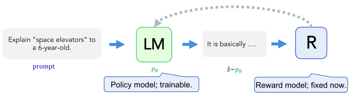
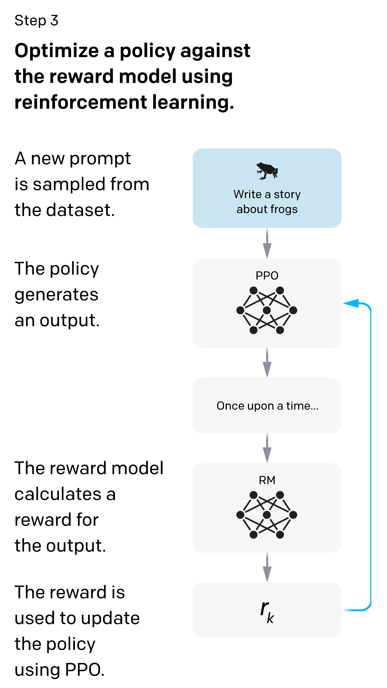
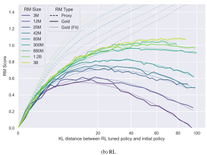
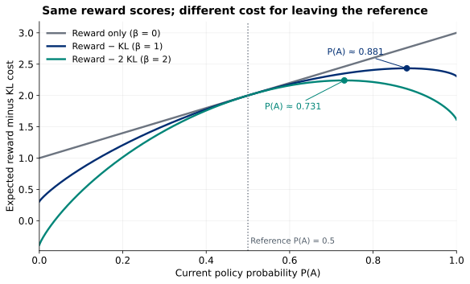

A reward model can score a response without telling us how to differentiate through the act of generating it. Policy gradients use sampled responses and their rewards to update the language model. A reference policy makes departure from its response distribution costly.
- Scope
- Slides 24–36 of the post-training deck; printed numbers match PDF pages. Slide 27’s derivation is optional. This reading stops at vanilla policy gradients with KL regularization.
- Assigned papers
- None. This handout is the reading for Session 19; supporting sources are optional.
- Time
- 45–55 minutes for §1–§5; 20–25 minutes for the practice set (§6.1). An extra question bank (§6.2) is optional; choose a few questions or allow 40–50 minutes for its core set. Optional implementation and code reading (§7): 25–35 minutes.
- By the end
- Explain how a fixed scorer guides a trainable policy; compute a sampled and an exact policy gradient; build a response-only sequence loss; distinguish reward-model fit from policy quality; define KL divergence and derive the forward-KL objective from the sampled log-ratio penalty.
- Prerequisites
- Reward models and expected reward (#18), gradients (#5), and response masks (#17). Here $x$ is a prompt, $y$ a complete response, $p_\theta$ the policy, $R_\phi$ the learned scorer, and $q$ a fixed reference policy. All logs are natural.
Slide-to-reading map
- 24–25 → §1: objective, model roles, and the discrete sampling boundary.
- 26 and 28 → §2–§3: sampled gradients and response-token log-probabilities.
- 27 (Bonus) → optional derivation in §2.3.
- 29–32 → §4.1: comparisons, a fixed reward model, policy updates, optional fresh feedback.
- 33–34 → §4.2: reward hacking and independent evaluation.
- 35–36 → §5: reference policy, log-ratios, and the regularized objective.
0Before reading: three predictions
Spend 5 minutes on these original warm-ups.
You freeze every parameter of a reward model. Its scores for two possible responses are 3 and 1. Can changing only the policy change expected reward? Can ordinary autograd backpropagate through a sampled integer token ID?
Work it out, then reveal
Yes to the first: changing how often each response occurs changes the average score. No to the second: the discrete token choice breaks that ordinary path. We instead differentiate the log-probability of the sampled response.
A policy produces response A with probability 0.25 and B with probability 0.75. Their rewards are 3 and 1. What is expected reward? If a batch happens to contain only A, is its average score the exact expectation?
Work it out, then reveal
$J=0.25(3)+0.75(1)=1.5$. An all-A batch has mean 3; it is a finite-sample estimate, not the exact expectation. The sampling procedure matters.
A prompt has 10 tokens; the sampled response has two content tokens followed by EOS. How many next-token log-probabilities make up $\log p_\theta(y\mid x)$? Include padding?
Work it out, then reveal
Three, including EOS when EOS ends the sampled response. Do not include prompt targets or padding. If generation is truncated at a fixed budget without EOS, use the actually generated response tokens and specify that stopping rule.
1Optimize the distribution that generates responses
1.1 Two models, two different training problems
In lecture 18, comparisons trained $R_\phi(x,y)$ to predict preferences. Now hold $\phi$ fixed and update $\theta$. For a fixed prompt distribution $D$, the unregularized objective is
$$J(\theta)=\mathbb E_{x\sim D}\mathbb E_{y\sim p_\theta(\cdot\mid x)}[R_\phi(x,y)].$$The scorer tells us how valuable a completed response appears; the policy determines how often that response occurs. Reward-model training does not itself change the policy. Policy training can use a learned scorer, an executable test, or another numerical reward; the score need not be differentiable with respect to the generated text.
| Object | Role during a policy step | Updated? |
|---|---|---|
| $p_\theta(y\mid x)$ | Generate responses and supply their log-probabilities | Yes |
| $R_\phi(x,y)$ | Score sampled responses | No |
| $q(y\mid x)$ | Reference for the penalty in §5 | No |


1.2 A frozen scorer does not make the objective constant
For a particular fixed string $y$, $R_\phi(x,y)$ has no direct dependence on $\theta$. But $J$ averages that score under a distribution that does depend on $\theta$. Changing the distribution changes the expectation.
In an ordinary sampled rollout, integer token choices are not differentiable. Calling reward.backward() on a detached score cannot update the policy. Instead, retain or recompute the policy’s differentiable log-probabilities for the sampled tokens, and use the reward as a numerical coefficient.
2A gradient from a sampled response
2.1 REINFORCE: score times log-probability gradient
Sample $M$ prompts independently from $D$ and $K$ responses per prompt independently from the current policy. A Monte Carlo estimator of the gradient is
$$\widehat{\nabla_\theta J}=\frac{1}{MK}\sum_{m=1}^{M}\sum_{k=1}^{K}R_\phi(x_m,y_{mk})\nabla_\theta\log p_\theta(y_{mk}\mid x_m).$$This is the policy-gradient or REINFORCE estimator of Williams (1992), as used in slides 26–28. The reward is a coefficient on a vector gradient. Averaging controls the scale as the number of samples changes. Unequal response counts need explicit prompt weighting if prompts should count equally.
A positive coefficient pushes up the sampled response’s log-probability for a sufficiently small isolated step; a negative one pushes it down. A zero coefficient contributes nothing. Shared parameters and other samples can change the net update. A low positive reward still reinforces that sampled response; “lower than another response” is not the same as “negative.”
2.2 Compute every possible sample in a two-response world
Let a single scalar $\theta$ set $p=P(A)=\sigma(\theta)$ and $P(B)=1-p$. Suppose $R(A)=3$, $R(B)=1$, and initially $p=0.25$. Then
$$J=3p+(1-p)=1+2p,\qquad \frac{dJ}{d\theta}=2p(1-p)=0.375.$$The two log-probability derivatives are $\frac{d\log p}{d\theta}=1-p=0.75$ and $\frac{d\log(1-p)}{d\theta}=-p=-0.25$. The possible one-sample estimates are:
| Sample | Probability | Reward | Estimate $g$ |
|---|---|---|---|
| A | 0.25 | 3 | $3(0.75)=2.25$ |
| B | 0.75 | 1 | $1(-0.25)=-0.25$ |
The expected estimate is $0.25(2.25)+0.75(-0.25)=0.375$, exactly the derivative above. An individual sample can point against the exact gradient. “Unbiased” describes the estimator’s expectation; it does not promise an improvement on every step.
Use the table above and gradient ascent $\theta_{\rm new}=\theta+0.1g$. Start each case from $\theta=\log(1/3)$. What happens after sampling A? After sampling B? Why is adding $0.1g$ directly to $p$ incorrect?
Work it out, then reveal
After A: $\theta_{\rm new}=-1.098612+0.225$, so $p_{\rm new}\approx0.294503$. After B: $\theta_{\rm new}=-1.098612-0.025$, so $p_{\rm new}\approx0.245342$. We differentiated with respect to the logit $\theta$, so we update that logit and recompute its sigmoid. A direct probability update is a different parameterization and may leave $[0,1]$.
2.3 Optional: where the estimator comes from
Bonus slide 27 · The log-derivative trick
Fix $x$, assume a finite response space with positive probabilities and a differentiable policy, and hold rewards fixed. Then
$$\nabla_\theta J=\sum_y R(x,y)\nabla_\theta p_\theta(y\mid x)=\sum_y p_\theta(y\mid x)R(x,y)\nabla_\theta\log p_\theta(y\mid x).$$The first equality differentiates a finite sum. The second uses $\nabla p=p\nabla\log p$. Both are exact; only replacing the final expectation with a sample mean introduces Monte Carlo estimation. For unbounded sequence spaces, interchanging derivatives and infinite sums requires additional regularity assumptions. A fixed maximum generation length gives a finite teaching model.
There is no missing ordinary gradient through the discrete sample: we differentiated the probability mass assigned to each possible response.
Optional extension · Why subtracting a prompt-only baseline preserves the mean
For a baseline $b(x)$ independent of the sampled response,
$$\mathbb E_y[b(x)\nabla_\theta\log p_\theta(y\mid x)]=b(x)\nabla_\theta\sum_y p_\theta(y\mid x)=0.$$Thus replacing $R$ by $R-b(x)$ keeps the expected gradient. Treat this baseline as a detached coefficient. A baseline can reduce variance, but an arbitrary choice need not do so. In our example, $b=1$ changes the A estimate to 1.5 and the B estimate to 0; the mean stays 0.375 and variance falls from 1.171875 to 0.421875. Subtracting a constant from every reward likewise preserves the exact gradient while changing individual sampled updates. A mean computed from the same small batch is response-dependent; the argument above does not automatically apply to it.
3From one response to many generated tokens
3.1 One terminal reward weights a sum of token log-probabilities
Autoregressive factorization gives
$$\log p_\theta(y\mid x)=\sum_{t=1}^{T_y}\log p_\theta(y_t\mid x,y_{<t}).$$The same terminal reward weights each generated token’s log-probability gradient. This is coarse credit assignment: a sequence score does not identify which token was responsible. Summing the token log-probability gradients gives the sequence log-probability gradient.
Include EOS if it was generated and scored; exclude padding and prompt prediction targets. The reward model can read the prompt even though prompt targets are excluded from the policy loss. Different examples may have different response lengths. Summing over response tokens and then averaging over responses estimates the sequence objective; dividing each response by its length changes the objective’s weighting.
3.2 Minimize a negative surrogate to perform ascent
For fresh on-policy samples, use a minimization loss whose gradient is the negative sampled policy gradient:
$$L_{\rm PG}=-\frac{1}{B}\sum_{i=1}^{B}\operatorname{stopgrad}(R_i)\log p_\theta(y_i\mid x_i).$$The numerical value of this surrogate is not an estimate of $-J$; its gradient supplies the desired update at the sampling policy. Do not compare its raw value across changing rollouts as if it measured response quality.
The following original teaching function is included in the downloadable CPU lab. logits[:, t] predicts targets[:, t]; shift inputs/targets before calling it. Every target ID must be valid, including masked positions.
def policy_loss(logits, targets, response_mask, rewards):
"""Aligned [B,T,V] logits, [B,T] targets/mask, [B] rewards."""
if logits.ndim != 3 or targets.shape != logits.shape[:2]:
raise ValueError("expected aligned [B,T,V] logits and [B,T] targets")
if response_mask.shape != targets.shape or response_mask.dtype != torch.bool:
raise ValueError("response_mask must be boolean [B,T]")
if rewards.shape != (logits.shape[0],):
raise ValueError("expected one reward per response")
if not response_mask.any(dim=1).all():
raise ValueError("each row needs at least one response target")
token_logp = logits.log_softmax(-1).gather(
-1, targets.unsqueeze(-1)).squeeze(-1)
sequence_logp = token_logp.masked_fill(~response_mask, 0).sum(-1)
return -(rewards.detach() * sequence_logp).mean()
Sample IDs and compute rewards without tracking a reward-model graph, then run a policy forward pass on those IDs with autograd enabled. The scoring pass must represent the distribution used for sampling; in this simplified lab, stochastic layers such as dropout are disabled, and sampling and scoring use unchanged parameters. Evaluation mode can disable dropout while still allowing gradients.
After optimizer.zero_grad(), call loss.backward() and optimizer.step(). Then collect fresh samples. Repeated optimization over old samples needs additional machinery beyond the estimator shown here.
A batch has response lengths 2 and 4. Someone includes prompt targets in sequence_logp, averages each row over its response length, and removes the minus sign from policy_loss. Explain each change separately.
Work it out, then reveal
Including prompt targets trains prompt likelihood even though the objective is conditional response reward. Averaging by response length gives shorter responses more weight per log-probability term than the sequence estimator specifies. Removing the minus sign makes gradient descent reduce a positively rewarded sampled response’s log-probability. Fix all three: response-only mask, token sum, negative reward-weighted log-probability.
4The feedback loop creates a new evaluation problem
4.1 Which data train which model?
- Initialize: begin with an SFT policy that already produces useful responses.
- Collect comparisons: generate candidate responses and have humans compare them under a stated rubric.
- Fit and validate the scorer: train $R_\phi$ on comparisons, with held-out prompts and comparisons to evaluate generalization.
- Optimize the policy: freeze the scorer, collect fresh policy responses, score them, and update $p_\theta$. Add the reference penalty from §5.
- Optional fresh feedback: obtain comparisons on updated-policy responses and retrain the scorer between policy-training phases.


Slides 29–32 separate these steps. Fresh comparisons can address response-distribution shift as the policy changes; evaluate updated outputs independently and update the scorer between policy-training phases.
4.2 Optimizing a proxy can amplify its mistakes
A reward model can be accurate on ordinary held-out comparisons and still be exploitable by a policy that seeks its highest scores. For example, it might confuse verbosity or flattery with usefulness. Reward hacking can produce fluent text; detecting it requires more than spotting gibberish.
Consider this entirely synthetic single-prompt example. The “human quality” column is an independent toy utility, not something available to the optimizer:
| Response | Predicted reward | Human quality | Initial probability | Updated probability |
|---|---|---|---|---|
| Accurate, useful answer | 2 | 3 | 0.7 | 0.2 |
| Incomplete answer | 1 | 1 | 0.2 | 0.1 |
| Confident, unsupported answer | 5 | −2 | 0.1 | 0.7 |
Calculate initial and updated expected predicted reward, and initial and updated expected human quality. Which metric would reveal the failure? Does a good held-out comparison accuracy before optimization rule it out?
Work it out, then reveal
Predicted reward rises from $0.7(2)+0.2(1)+0.1(5)=2.1$ to $0.2(2)+0.1(1)+0.7(5)=4.0$. Human quality falls from $0.7(3)+0.2(1)+0.1(-2)=2.1$ to $0.2(3)+0.1(1)+0.7(-2)=-0.7$. Independent human evaluation of updated-policy outputs reveals the failure. Earlier accuracy on a different output distribution does not rule it out.
Optional empirical illustration · When a higher learned reward stops helping


Synthetic evaluation: a fixed 6B reward model provides “gold” judgments, not direct human ratings. These PPO runs use a zero KL-penalty coefficient; the axis measures how far the policy nevertheless moved. This illustration supports slides 33–34; it does not compare §5’s β values.
Follow the purple 3M curves. After gold score peaks, what happens to proxy score? Would maximizing proxy score select the gold evaluator’s best checkpoint? Does this measure human satisfaction?
Interpret the curves
Proxy score keeps rising while gold score falls, so maximizing the proxy passes the best gold-score region. The evaluator is another model; human satisfaction was not directly measured here.
A useful audit samples outputs from successive policy checkpoints, holds prompts fixed for comparisons, randomizes answer order, and asks evaluators to apply a defined quality rubric without seeing scorer values. Report predicted reward alongside independent quality and the rate of specific errors. Reward-model generalization and policy quality are separate measurements.
5Make departure from a reference policy costly
5.1 Three roles: current policy, reference, and scorer
Choose a fixed reference $q(y\mid x)$, commonly a copy of the initial SFT policy. The trainable policy may start with identical weights; only its copy is updated. The reference supplies response probabilities, while the reward model supplies scalar scores. Keep the reference fixed during this training phase.
Slides 35–36 replace pure reward maximization with
$$F(\theta)=\mathbb E_{x\sim D}\left[\mathbb E_{y\sim p_\theta}[R_\phi(x,y)]-\beta D_{\rm KL}\big(p_\theta(\cdot\mid x)\,\|\,q(\cdot\mid x)\big)\right],\qquad\beta\ge0.$$The direction matters: this is current-policy-to-reference KL, averaged over responses from the current policy. A larger $\beta$ charges more for the same departure at a fixed reward scale. It is a soft penalty, not a hard guarantee of closeness or quality. Scaling reward scores changes the tradeoff unless $\beta$ is scaled too.
5.2 What is KL divergence?
The Kullback–Leibler (KL) divergence compares two probability distributions over the same outcomes. Here the outcomes are complete responses to one fixed prompt $x$. Temporarily write $p(y)=p_\theta(y\mid x)$ for the current policy and $q(y)=q(y\mid x)$ for the reference. Both distributions sum to one. For the derivations below, use a fixed maximum generation length so the response space is finite. Define
$$D_{\rm KL}(p\|q)=\sum_y p(y)\log\frac{p(y)}{q(y)} =\mathbb E_{y\sim p}\left[\log\frac{p(y)}{q(y)}\right].$$Read this from the inside out. The ratio $p(y)/q(y)$ compares the probability of the same response under the two models. Its log is positive when the current policy makes that response more likely, and negative when it makes it less likely. Multiplying by $p(y)$ and summing averages these log-ratios over responses from the current policy. Thus KL compares the full distributions, not just the most likely answer.
- $D_{\rm KL}(p\|q)\ge0$, with equality exactly when the distributions agree.
- Direction matters: generally $D_{\rm KL}(p\|q)\ne D_{\rm KL}(q\|p)$. It is a divergence rather than a symmetric distance.
- A response with $p(y)=0$ contributes zero. If $p(y)>0$ but $q(y)=0$, forward KL is infinite. The finite examples here use positive probabilities.
- Natural logarithms give units of nats; base-2 logarithms would give bits.
Another interpretation connects KL to the negative log-probabilities used in language-model losses. Define entropy $H(p)=-\sum_y p(y)\log p(y)$ and cross-entropy $H(p,q)=-\sum_y p(y)\log q(y)$. Then
$$D_{\rm KL}(p\|q)=H(p,q)-H(p).$$KL is the extra expected negative log-probability from evaluating responses drawn from $p$ with $q$ instead of $p$. Here $p$ is the current policy, not a ground-truth human distribution.
Optional proof · Why can negative log-ratios average to a nonnegative number?
For positive probabilities on a finite outcome space, use $-\log u\ge1-u$, with equality only at $u=1$. Set $u=q(y)/p(y)$ and average:
$$\begin{aligned} D_{\rm KL}(p\|q)&=-\sum_y p(y)\log\frac{q(y)}{p(y)}\\ &\ge\sum_y p(y)\left(1-\frac{q(y)}{p(y)}\right)\\ &=\sum_y p(y)-\sum_y q(y)=1-1=0. \end{aligned}$$Equality requires $q(y)/p(y)=1$ for every outcome, so $p=q$. The zero-probability conventions extend the definition beyond this strictly positive case. For another explanation, see Shalizi’s information-theory lecture notes, under “Cross-entropy and divergence” and the nonnegativity proof.
For example, let $p=(0.8,0.2)$ and $q=(0.5,0.5)$ over responses A and B:
| Response | $p(y)$ | $q(y)$ | $\log[p(y)/q(y)]$ | $p(y)\log[p(y)/q(y)]$ |
|---|---|---|---|---|
| A | 0.8 | 0.5 | $\log1.6\approx0.470004$ | 0.376003 |
| B | 0.2 | 0.5 | $\log0.4\approx-0.916291$ | −0.183258 |
Summing the last column gives $D_{\rm KL}(p\|q)\approx0.192745$ nats. Reversing the roles gives $D_{\rm KL}(q\|p)\approx0.223144$ nats, a different value. One B sample has a negative log-ratio; neither that sample nor an equally weighted average over A and B is the forward KL above. A finite sample mean can be negative even though its expectation is nonnegative.
5.3 How the response penalty becomes a KL term
Slide 35 subtracts a log-ratio from each response’s reward. We will show why the expected value of this per-response subtraction is a KL penalty. For a fixed prompt, define
$$c_\theta(x,y)=\beta\log\frac{p_\theta(y\mid x)}{q(y\mid x)},\qquad \widetilde R_\theta(x,y)=R_\phi(x,y)-c_\theta(x,y).$$Now average over $y\sim p_\theta(\cdot\mid x)$. Fix $x$ and abbreviate $p(y)=p_\theta(y\mid x)$, $R(y)=R_\phi(x,y)$, and $\widetilde R(y)=\widetilde R_\theta(x,y)$:
Expand the expectation, substitute the adjusted reward, and distribute the sum. The last line uses the KL definition in §5.2. This identity is exact; sampling is only needed to estimate it.
Finally average over prompts, restoring the conditioning on $x$:
$$\begin{aligned} F(\theta)&=\mathbb E_{x\sim D}\mathbb E_{y\sim p_\theta(\cdot\mid x)}[\widetilde R_\theta(x,y)]\\ &=\mathbb E_{x\sim D}\left[ \mathbb E_{y\sim p_\theta(\cdot\mid x)}[R_\phi(x,y)] -\beta D_{\rm KL}\big(p_\theta(\cdot\mid x)\|q(\cdot\mid x)\big)\right]. \end{aligned}$$This is the objective on slide 36. The average subtracted penalty is $\beta D_{\rm KL}$; its contribution to a maximization objective has a minus sign. The sampled log-ratio becomes a KL term when averaged under the current policy. Drawing responses from another distribution changes this calculation.
For $p=(0.8,0.2)$, $q=(0.5,0.5)$, rewards $(3,1)$, and β = 1, the adjusted rewards are approximately 2.529996 for A and 1.916291 for B. Averaging them directly gives
$$0.8(2.529996)+0.2(1.916291)\approx2.407255=2.6-0.192745.$$B receives a positive adjustment because its log-ratio is negative. The overall expected adjustment is nevertheless a subtraction of 0.192745. In a real LM, exact enumeration is infeasible; a mean of log-ratios from fresh current-policy samples estimates the KL expectation.
For an autoregressive response, the same penalty can be accumulated over generated tokens:
$$\log\frac{p_\theta(y\mid x)}{q(y\mid x)} =\sum_{t=1}^{T_y}\log\frac{p_\theta(y_t\mid x,y_{<t})}{q(y_t\mid x,y_{<t})}.$$Both models score the same tokens under the same generated prefixes. Include generated EOS and exclude prompt targets and padding, as in §3. The sum along one response is still a sampled sequence log-ratio; its expectation over current-policy responses is the sequence-distribution KL.
In the preceding example, subtracting the log-ratio raises B’s adjusted reward above its original reward. Why can we still call the expected adjustment a penalty? Must a finite rollout batch show a nonnegative mean log-ratio?
Work it out, then reveal
B’s log-ratio is negative, so subtracting it raises B’s adjusted reward. But the policy-weighted mean adjustment is $-\beta D_{\rm KL}(p\|q)\le0$: A’s weighted penalty outweighs B’s weighted bonus. A finite batch can have a negative mean log-ratio; nonnegativity applies to the exact expectation.
5.4 Use the adjusted reward in a policy-gradient update
For fresh current-policy samples, use the adjusted reward as a detached coefficient in the REINFORCE surrogate. This gives an unbiased estimator of $\nabla F$ under the stated assumptions. Differentiating only the sampled adjusted-reward values would miss the effect of changing the response probabilities.
Optional gradient check · Why can the shaped reward be detached?
At one fixed prompt, differentiating $F=\sum_y p_\theta(y)[R(y)-\beta\log(p_\theta(y)/q(y))]$ gives
$$\nabla F=\mathbb E_p[(R-\beta\log(p/q))\nabla\log p]-\beta\mathbb E_p[\nabla\log p].$$The last expectation equals $\nabla\sum_y p(y)=0$. Therefore the first term alone has the correct expectation. Detach its coefficient, retain the gradient through the sampled sequence log-probability, and use the outer negative sign for minimization. This is a local on-policy argument; reusing a fixed rollout through multiple parameter updates is outside its assumptions.
For the two-response model with $p=\sigma(\theta)$ and reference probability $q_A$, the exact derivative is
$$\frac{dF}{d\theta}=p(1-p)\left[R_A-R_B-\beta\log\frac{p(1-q_A)}{(1-p)q_A}\right].$$This gives the explorer below an exact answer to compare with each possible sampled update. At $p=0.8$, $q_A=0.5$, $(R_A,R_B)=(3,1)$, and $\beta=1$, the derivative is about 0.098193, smaller than the unregularized derivative 0.32.


Why do all three curves meet at P(A) = 0.5? Why does a larger β move the maximizing policy toward the reference without forcing it to equal the reference? Does the lower maximum of the green curve mean its reward model is less accurate?
Explain the shapes
At the reference, KL is zero, so each objective equals expected reward 2. Away from it, the penalty trades off reward gain against departure. The two reward scores are identical across all curves; changing β changes the optimization objective, not reward-model accuracy. The maximum is near 0.880797 for β = 1 and 0.731059 for β = 2; neither is forced to be 0.5.
Optionally, set the exact derivative above to zero. For β > 0, the maximizing probability is $p^*=\sigma(\operatorname{logit}(q_A)+(R_A-R_B)/\beta)$. Larger β shrinks the logit shift relative to the reference. This also explains the optimum reported by the explorer.
For one prompt with positive $p$ and $q$, rewrite $\mathbb E_{y\sim p}[R(y)-\beta\log(p(y)/q(y))]$ using expected reward and KL. Now average the entire adjusted reward using reference-policy samples $y\sim q$, keeping the same log-ratio. What are the expected log-ratio and resulting objective?
Reconstruct the identity
With current-policy sampling, the objective is $\mathbb E_p[R]-\beta D_{\rm KL}(p\|q)$. With reference sampling,
$$\mathbb E_{y\sim q}\left[\log\frac{p(y)}{q(y)}\right] =-D_{\rm KL}(q\|p).$$Subtracting that average would give $\mathbb E_q[R]+\beta D_{\rm KL}(q\|p)$: both the reward expectation and the divergence term have changed. The ratio alone does not determine the KL; the distribution used to average it is essential.
- Set β to 0 and use the §2 example. Select B: does the sampled step agree with the exact gradient’s sign?
- Load the §5 example. Increase β to 2: does the exact update still increase P(A)?
- Set current and reference P(A) equal. Is the KL gradient zero even if the reward gradient is nonzero?
Explorer predictions
1. No. The B sample gives −0.25 while the exact gradient is +0.375. 2. No. At β = 2, $0.16(2-2\log4)\approx-0.123614$; the reference cost outweighs the local reward gain. 3. Yes. At equality KL is zero and its first derivative is zero; reward can immediately move the policy away.
KL charges for departure from the reference; it cannot correct every error in the reference or scorer. Continue evaluating policy quality independently, even when KL stays small.
6Practice: explain, calculate, repair
6.1 A timed 20-point practice set
This original 20-point set takes about 20–25 minutes. Explain the sign and the sampling assumption, not only the arithmetic.
A student claims: “The reward model is frozen, so expected reward has zero policy gradient.” Correct the claim. State which model generates responses, which supplies reward, and which parameters a policy step updates. Give the one-sample estimator.
Work it out, then reveal
The expectation changes with the policy’s response probabilities even though fixed-string scores stay constant. $p_\theta$ generates, $R_\phi$ scores, and only $\theta$ changes. For a prompt and fresh response sampled from their specified distributions, $g=R_\phi(x,y)\nabla_\theta\log p_\theta(y\mid x)$.
Marking: 1 point for dependence through sampling probabilities; 1 for generator/scorer roles; 1 for trainable/frozen parameters; 1 for the estimator and fresh-policy sampling.
For $p(A)=\sigma(\theta)=0.6$, rewards are $R_A=2$ and $R_B=-1$, with no KL penalty. Compute (i) expected reward, (ii) exact derivative with respect to $\theta$, (iii) each possible one-sample gradient, and (iv) their expected value. Does sampling the negative-reward response necessarily decrease P(A)?
Work it out, then reveal
(i) $J=0.6(2)+0.4(-1)=0.8$. (ii) $dJ/d\theta=(2-(-1))(0.6)(0.4)=0.72$. (iii) A gives $2(1-0.6)=0.8$; B gives $(-1)(-0.6)=0.6$. (iv) $0.6(0.8)+0.4(0.6)=0.72$. Both sampled gradients raise the A logit; negatively rewarding B lowers B’s probability and thus raises A’s.
Marking: 1 point each for (i), (ii), and the two sampled gradients; 1 for the weighted mean and sign explanation.
# Already aligned log-probabilities, each row = prompt + response + pad.
sequence_logp = token_logp.mean(dim=1)
loss = (rewards * sequence_logp).mean()
loss.backward()
optimizer.step()Assume fresh on-policy samples, one terminal reward per response, and a gradient-descent optimizer. Rewrite the essential lines to handle response-only targets, the sign, detached coefficients, and independent steps. Explain why calling reward_model.eval() alone does not freeze its parameters.
Work it out, then reveal
optimizer.zero_grad()
sequence_logp = token_logp.masked_fill(~response_mask, 0).sum(dim=1)
loss = -(rewards.detach() * sequence_logp).mean()
loss.backward()
optimizer.step()Use a boolean response mask; include generated EOS and exclude padding. Evaluation mode changes behavior such as dropout; use frozen parameters and/or a no-grad scoring context to avoid a reward-model backward graph.
Marking: 1 point for mask and sum; 1 for sign; 1 for detach and clearing gradients; 1 for the eval-versus-autograd explanation.
Let current probabilities be $(0.25,0.75)$ and reference probabilities $(0.5,0.5)$ for A and B. Rewards are $(4,0)$ and β = 0.5. Compute both log-ratios, forward KL, expected reward, and the regularized objective. A rollout consists of one A: can its estimated mean log-ratio be negative?
Work it out, then reveal
A: $\log0.5=-0.693147$; B: $\log1.5=0.405465$. KL $=0.25(-0.693147)+0.75(0.405465)=0.130812$. Expected reward is 1. Thus $F=1-0.5(0.130812)\approx0.934594$. The one-A sample mean is −0.693147, which is allowed; the exact policy-weighted KL remains nonnegative.
Marking: 1 point for the log-ratios; 1 for the correctly weighted KL; 1 for expected reward and $F$; 1 for distinguishing a sample from its expectation.
A checkpoint has higher predicted reward, unchanged reward-model validation accuracy on an old candidate pool, and more unsupported claims under a blinded human audit of current responses. What has improved? What has deteriorated? Name a useful next measurement or data-collection step and a limitation of merely increasing β.
Work it out, then reveal
The policy improved the learned reward proxy; factual quality deteriorated under the stated audit. Measure error rates and human preferences on current outputs using held-out prompts, or collect new comparisons containing these failure cases for a subsequent scorer update. Increasing β may restrain departure but does not correct a faulty scorer or reference and cannot guarantee factuality.
Marking: 1 point for proxy-versus-quality distinction; 1 for a concrete current-output evaluation/feedback step; 1 for the penalty’s limitation.
6.2 Optional question bank for future quiz preparation
Open the extra practice bank: eight core questions and two optional challenges
Try these with your notes closed, then check the worked solutions and marking guides. Questions 6F–6M cover the core reading (32 points total); choose three or four for a 20–25 minute practice session, or allow 40–50 minutes for all eight. The two challenges (8 extra points) draw on explicitly optional material. All numerical settings are new; source adaptations are credited beside the questions.
| If you want practice with… | Try |
|---|---|
| Sampling assumptions and model roles | 6F, 6K, 6M |
| Gradients and batch weighting | 6G, 6H |
| Response masks and sequence scores | 6I, 6J |
| Reward–KL tradeoffs and evaluation | 6L |
| Optional deeper reasoning | Challenge 1–2 |
For one prompt, let $P(A)=\sigma(\theta)=0.2$, with rewards $R_A=4$ and $R_B=1$. The log-probability derivatives are $1-p$ for A and $-p$ for B. Three groups propose:
- Sample each response independently from the current policy and average $R(y)\,\partial_\theta\log p_\theta(y)$.
- Always choose the most probable response, but apply the same formula as if it had been sampled.
- Keep sampling until an A appears, discard every B, and average only the retained A terms.
Which group estimates the desired on-policy gradient without selection bias? Compute that exact gradient and the estimate produced by each of the other two groups.
Solve first, then check the reasoning
Only group 1 uses the required sampling distribution. The A term is $4(0.8)=3.2$ and the B term is $1(-0.2)=-0.2$. Their policy-weighted expectation is $0.2(3.2)+0.8(-0.2)=0.48$, also $(4-1)p(1-p)$.
Group 2 always chooses B and reports −0.2, even the wrong sign. Group 3 retains only A and reports 3.2. Both selection rules change the distribution over responses; neither unmodified average estimates 0.48. More selected samples do not remove this selection bias.
Marking: 1 point for identifying group 1 and its sampling assumption; 1 for the two outcome terms; 1 for the exact weighted gradient; 1 for both biased estimates and the explanation.
A policy has three response logits $z=(\log0.2,\log0.5,\log0.3)$ and $p=\operatorname{softmax}(z)$. A rollout selects B and receives reward −2.5. There is no KL penalty. You may use
$$\frac{\partial\log p_B}{\partial z_j}=\mathbf1\{j=B\}-p_j.$$Find the ascent gradient with respect to all three logits, update $z$ using step size 0.2, and compute the new probabilities. Why would editing only the B logit fail to implement this gradient?
Solve first, then check the reasoning
The log-probability gradient is $(-0.2,0.5,-0.3)$. Multiplying by −2.5 gives the ascent gradient $(0.5,-1.25,0.75)$. Add $(0.1,-0.25,0.15)$ to the old logits, then normalize with softmax:
$$p_{\rm new}\approx(0.230488,\;0.406055,\;0.363458).$$The negatively rewarded response loses probability. The denominator in softmax couples the logits: the selected log-probability depends on all three. Editing only B omits the nonzero A and C components and produces a different update. These are independent response logits in a toy model, not separate parameters for every string in an LM.
Marking: 1 point for the log-probability gradient; 1 for multiplying by the signed reward; 1 for the logit step; 1 for the normalized probabilities; 1 for the coupling explanation.
The target objective gives prompts P and Q equal probability. A collection run samples two responses for P and one for Q. At the same fixed policy, their scalar policy-gradient estimates are 2 and 4 for P, and −3 for Q. The response counts were fixed in advance and each response was sampled independently from its prompt’s current policy.
Compute (i) an estimate giving each prompt equal weight and (ii) the flat mean over the three responses. What prompt mixture does the flat mean correspond to? Are the two estimates always equal if more data are collected?
Solve first, then check the reasoning
The equal-prompt estimate first averages within each prompt:
$$\widehat g=\frac12\left(\frac{2+4}{2}+(-3)\right)=0.$$The flat mean is $(2+4-3)/3=1$. It assigns P weight $2/3$ and Q weight $1/3$. If the 2:1 response-count ratio persists, more data still estimate that different prompt mixture. The two objectives can have the same gradient in special cases, but equality is not guaranteed.
Marking: 1 point for within-prompt averaging; 1 for the equal-prompt result; 1 for the flat mean and implied mixture; 1 for explaining why sample count alone does not fix weighting.
Entries below are already aligned target log-probabilities, in natural logs. Labels specify which targets belong to the response. EOS was generated in both rows; “pad” is padding.
| Row | Target log-probabilities and roles | Reward |
|---|---|---|
| 1 | prompt −0.2; response −0.7; response −0.8; EOS −0.5; pad −9 | 2 |
| 2 | prompt −0.4; prompt −0.6; response −1.2; EOS −0.3; pad −9 | −1 |
Compute each sequence log-probability and $L=-\frac12\sum_iR_i\log p(y_i\mid x_i)$. Would averaging by each valid response length give the same result? If an individual term is negative, is that automatically a bug?
Solve first, then check the reasoning
The response sums are −2.0 and −1.5. The signed per-response loss terms are 4 and −1.5, so the batch loss is $(4-1.5)/2=1.25$. Prompt targets and padding do not enter the sums.
Averaging by the respective valid response lengths 3 and 2 instead gives $(4/3-1.5/2)/2\approx0.291667$, a different response weighting. Negative rewards can make individual surrogate terms, or even their batch mean, negative. This surrogate supplies a gradient; it is not a nonnegative preference cross-entropy or an estimate of negative expected reward.
Marking: 1 point for both response sums; 1 for signed terms and batch mean; 1 for the length-normalized result and changed weighting; 1 for interpreting a negative term.
A response has two content tokens and EOS. Along that same response and its prefixes, the current policy assigns the selected tokens probabilities $(0.4,0.5,0.2)$; the fixed reference assigns them $(0.2,0.25,0.4)$. The reward is 1.8 and β = 0.4.
Calculate both sequence probabilities, the sequence log-ratio, and the shaped reward. Is this one log-ratio the exact KL divergence? Would generating a separate response from the reference and scoring that response give the denominator required here?
Solve first, then check the reasoning
The sequence probabilities are $0.4(0.5)(0.2)=0.04$ and $0.2(0.25)(0.4)=0.02$. The ratio is 2, so the log-ratio is $\log2\approx0.693147$, also $\log2+\log2+\log(1/2)$. The shaped reward is $1.8-0.4\log2\approx1.522741$.
This is one sampled log-ratio. Exact forward KL averages over responses from the current policy. The denominator must score the same response tokens under the same prefixes; an independently generated reference response would be a different outcome.
Marking: 1 point for the sequence probabilities; 1 for the log-ratio; 1 for the shaped reward; 1 for the expectation and matched-response explanations.
Two implementations use the same frozen reward model. Run A saves a copy of the initial SFT policy as its reference and retains it. Run B copies the current policy into the reference immediately before every update. Both evaluate their KL terms before taking that update.
In which run is KL zero at the start of every update? Does that run retain a penalty for cumulative departure from the initial SFT policy? Explain why even a fixed reference penalty does not guarantee truthful responses.
Solve first, then check the reasoning
Run B starts every update with $p=q$, so its KL and KL gradient are zero there. Replacing the reference each time removes the persistent anchor to the initial SFT distribution in this setup. Run A continues to charge for departure from that saved distribution.
A reference penalty controls a distributional tradeoff. The reference itself may generate false claims, and the reward proxy may favor them. Truthfulness still needs an independent evaluation; a finite β is not a guarantee.
Marking: 1 point for Run B’s zero KL and gradient at equality; 1 for the lost cumulative anchor versus Run A; 1 for the limit of the guarantee.
The following values are synthetic population quantities for the same prompt distribution and reference; ignore sampling uncertainty for this calculation.
| Checkpoint | Expected reward | KL to reference | Independent human-audit success |
|---|---|---|---|
| A | 2.4 | 0.1 | 82% |
| B | 3.1 | 0.5 | 68% |
Which checkpoint maximizes $F=\mathbb E[R]-\beta\,\mathrm{KL}$ when β = 1? When β = 2? Find the β at which they tie. Does winning on $F$ imply winning on the human audit?
Solve first, then check the reasoning
At β = 1, $F_A=2.3$ and $F_B=2.6$, so choose B. At β = 2, $F_A=2.2$ and $F_B=2.1$, so choose A. Their difference is $F_B-F_A=0.7-0.4\beta$; the tie occurs at β = 1.75.
The objective and audit measure different things. At β = 1 the objective favors B despite its worse audit success. Changing β changes the tradeoff; it does not prove the scorer or reference measures human quality accurately.
Marking: 1 point for the β = 1 values and choice; 1 for β = 2; 1 for the tie threshold; 1 for separating objective selection from audited quality.
Suppose a base LM has not been instruction-tuned. A perfect fixed reward function gives reward 1 to useful responses and 0 otherwise. Useful responses have nonzero but extremely small probability under the base policy.
Does the policy-gradient formula mathematically require an SFT initialization? In a finite rollout batch containing no useful response, what gradient does the unregularized estimator produce? Explain one practical reason SFT can help, and why a perfect scorer does not restore ordinary backpropagation through sampled token IDs.
Solve first, then check the reasoning
No: the score-function identity can be applied to the base policy. But in the stated batch every coefficient is zero, so the unregularized sampled gradient is zero, even though the true expected gradient need not be zero.
SFT can make useful instruction-following responses more likely before RL begins, improving the usefulness of finite sampled feedback. It is a practical initialization strategy, not a prerequisite for writing the estimator or a universal requirement for successful RL. A perfect scorer can identify a good completed response; it does not make discrete token sampling differentiable.
Marking: 1 point for distinguishing a mathematical requirement from a practical initialization; 1 for the zero sampled gradient; 1 for the exploration/initial-response explanation; 1 for the discrete boundary.
Optional challenges: use the optional notes before attempting these
These extend the question bank; they are not needed for the eight core questions above.
Use the optional baseline note in §2.3. Let $P(A)=\sigma(\theta)=0.4$, $R_A=2$, and $R_B=0$; differentiate with respect to the logit $\theta$. A student uses one rollout per prompt and subtracts the mean reward of that same one-rollout batch from its reward.
Compute the exact reward gradient and each possible baseline-subtracted sampled gradient. Is the estimator unbiased? Compare with a detached baseline fixed in advance at $b=0.8$.
Solve first, then check the reasoning
The exact gradient is $(2-0)(0.4)(0.6)=0.48$. With a one-rollout batch, the mean is always the sampled reward itself. Thus $R-b=0$ for both outcomes and every estimate is zero: the estimator is biased here.
With the fixed baseline 0.8, the possible estimates are $(2-0.8)(0.6)=0.72$ and $(0-0.8)(-0.4)=0.32$. Their expectation is $0.4(0.72)+0.6(0.32)=0.48$. A baseline’s dependence on the sampled response matters; detaching it alone does not establish unbiasedness.
Marking: 1 point for the exact gradient; 1 for the zero estimates; 1 for diagnosing response dependence and bias; 1 for the fixed-baseline calculation.
Use the optional stationary-point formula in the answer to 5B. Let reference $q_A=0.5$, rewards $(R_A,R_B)=(3,1)$, and β = 1. Compare the maximizing P(A) for:
- The original reward scores.
- Adding 10 to both scores, keeping β fixed.
- Doubling both original scores, keeping β fixed.
- Doubling both original scores and β.
Which changes preserve the optimum? Explain why unchanged ranking alone does not settle the reward–KL tradeoff.
Solve first, then check the reasoning
The original optimum is $\sigma(2)\approx0.880797$. A common addition cancels from the reward difference; it shifts $F$ by 10 but leaves the optimum unchanged. Doubling the original rewards at fixed β changes the optimum to $\sigma(4)\approx0.982014$. Doubling β as well restores $\sigma(2)$.
All four cases preserve the A-over-B ranking, but KL trades off against the numerical reward scale. A common offset preserves this exact optimum, while reward scaling requires a matching β scaling to preserve it. Individual finite-sample updates can still change under a common offset, as the optional baseline note explains.
Marking: 1 point for the original optimum; 1 for offset invariance; 1 for the changed optimum at fixed β; 1 for matching the β scale and explaining the tradeoff.
7Optional: implementation checks and a real code reading
7.1 Run the small CPU lab
Download 19_policy_gradient_checks.py and run python3 19_policy_gradient_checks.py in an environment with PyTorch. It needs no GPU, model download, network, or CartPole environment. It enumerates every outcome where possible, so it can compare estimators against exact gradients rather than judging them from one noisy training run.
- Recover exact reward gradients by averaging per-outcome score-function gradients.
- Check positive/negative reward signs, constant-reward cancellation, and the prompt-only baseline example.
- Verify sequence sums, response masks, EOS placement, detached rewards, and zero masked-position gradients.
- Compare exact KL differentiation against a detached shaped-reward estimator; expose the missing sampling-probability term in a naive implementation.
- Check the reward-hacking table and the timed set’s binary-gradient and KL calculations.
policy_loss, remove the leading minus sign, run the lab, and explain the failure. Restore it, then change the sequence token sum to a mean and rerun. The first mutation reverses ascent; the second divides by the padded width, changing the update scale when padding changes. Dividing by each valid response length would additionally change relative response weighting. The correct binary A-sample step moves P(A) from 0.25 to 0.294503; the sign-flipped step moves it to 0.210218.7.2 Read PyTorch’s REINFORCE example
acc295dc7b90714f1bf47f06004fc19a7fe235c4 (107 lines). This historical teaching snapshot is pinned for reproducibility. Focus on select_action (54–60) and finish_episode (63–79). Excerpts retain the upstream BSD 3-Clause license: Copyright (c) 2017, Pytorch contributors.reinforce.py · select_action · lines 54–60 (verbatim)
def select_action(state):
state = torch.from_numpy(state).float().unsqueeze(0)
probs = policy(state)
m = Categorical(probs)
action = m.sample()
policy.saved_log_probs.append(m.log_prob(action))
return action.item()
The action is a sampled integer, while m.log_prob(action) retains the graph from the policy probabilities. Returning action.item() to the environment is fine; detaching the saved log-probability would destroy the learning path. This is §1’s discrete boundary and §3’s retained log-probability in a two-action environment.
reinforce.py · finish_episode · lines 72–77 (verbatim)
for log_prob, R in zip(policy.saved_log_probs, returns):
policy_loss.append(-log_prob * R)
optimizer.zero_grad()
policy_loss = torch.cat(policy_loss).sum()
policy_loss.backward()
optimizer.step()
The minus sign makes a minimizer perform reward-weighted ascent, as in §3. The upstream code sums over time steps; its separate returns values are discounted future rewards computed earlier in the function. It also normalizes those returns within the episode. That normalization is an additional algorithmic choice and does not inherit the simple prompt-only-baseline argument in §2.3. CartPole’s time-step rewards and changing states differ from this handout’s single terminal response reward.
This file has no language-model response mask, reference policy, or KL penalty. Its policy has dropout; the original code saves log-probabilities during the sampling forward pass. Our deterministic teaching loss instead recomputes log-probabilities with dropout disabled.
- Copy
select_actioninto a scratch file with a tiny two-logit policy and no environment. Replacem.log_prob(action)bym.log_prob(action).detach(). What fails at backward? - Restore it. Remove the minus sign in
policy_loss.append(-log_prob * R), using fixed action A, P(A) = 0.25, reward 3, and a scalar-logit SGD step of 0.1. Compute the new probability. - Read lines 67–71. Why can the normalized return coefficient be negative even if every environment reward is positive?
Work it out, then reveal
1. With only detached saved log-probabilities, the loss has no policy gradient graph; backward raises an error. The downloadable lab executes the upstream function in a stubbed CPU environment and checks this exact mutation. 2. Correct: 0.294503. Wrong sign: 0.210218. This is a controlled scalar-logit test, not the trajectory of upstream Adam with dropout. 3. Subtracting the episode mean makes below-mean returns negative. They then suppress rather than reinforce the selected actions; this coefficient is not a raw reward score.
7.3 Optional sources and a scope check
- Williams (1992), Simple statistical gradient-following algorithms for connectionist reinforcement learning: REINFORCE and the score-function estimator.
- Stiennon et al. (2020), Learning to summarize from human feedback: the summarization application cited on slide 36.
- Ouyang et al. (2022), Training language models to follow instructions with human feedback: a complete applied pipeline, with optimization machinery beyond this lecture.
For the assigned scope, you should be able to trace “sample → score → weight log-probability gradient → update policy,” and explain what the KL penalty adds. The optional derivations justify those operations; implementing a production RLHF trainer is not required.